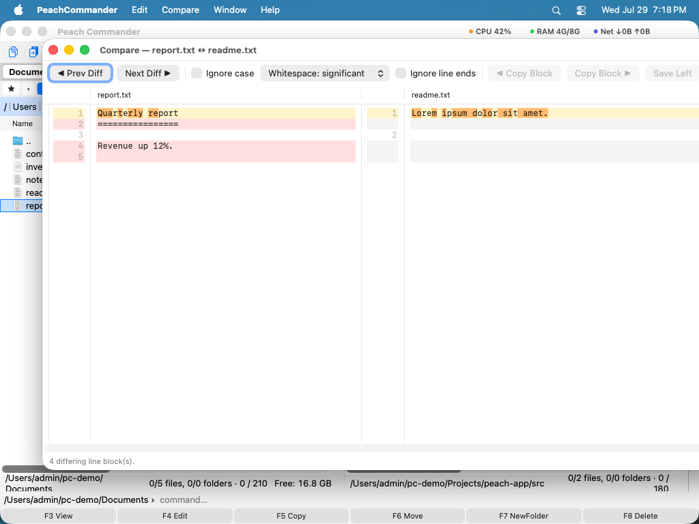

비교 및 동기화
같은 폴더의 사본 두 개(작업 폴더와 백업, 노트북과 네트워크 공유, 프로젝트와 그 압축본)를 유지할 때, Peach Commander는 무엇이 바뀌었는지 정확히 파악하고 양쪽을 다시 일치시키도록 돕습니다. 두 디렉토리를 동기화하고, 개별 파일을 한 줄씩 비교하고, 마지막 문자까지 확실히 해야 할 때 파일을 바이트 단위로 검사할 수 있습니다.
두 디렉토리 동기화
- 동기화할 폴더를 왼쪽 패널에, 비교 대상 폴더를 오른쪽 패널에 엽니다.
- 명령 ▸ Synchronize Dirs…를 선택합니다. 두 폴더 경로가 패널에서 채워집니다.
- 비교가 얼마나 철저해야 하는지 설정합니다. 하위 폴더 포함, (날짜와 크기뿐 아니라) 내용별 비교, 또는 수정 날짜 무시.
- 특정 파일만 동기화하려면 필터 마스크(예:
*.jpg;*.png)를 추가합니다. - 결과 그리드를 검토합니다. 각 행은 왼쪽에 파일, 가운데에 방향 화살표, 오른쪽에 대응 파일을 보여줍니다. 화살표는 무슨 일이 일어날지 알려줍니다. →는 왼쪽에서 오른쪽으로 복사, ←는 오른쪽에서 왼쪽으로 복사, =는 둘이 동일함을 의미합니다.
- 제안된 방향에 동의하지 않으면 개별 행을 조정한 다음, 동기화 버튼을 클릭하여 변경을 수행합니다.
 (그림: 디렉토리 동기화 창은 양쪽을 비교하고 각 파일에 대해 복사 방향을 제안합니다.)
(그림: 디렉토리 동기화 창은 양쪽을 비교하고 각 파일에 대해 복사 방향을 제안합니다.)
두 파일을 내용별로 비교
- 각 패널에서 파일 하나씩(또는 같은 패널에서 파일 두 개) 선택합니다.
- 파일 ▸ Compare by Content…를 선택합니다.
- 두 파일이 차이가 강조된 상태로 나란히 열립니다. 다음/이전 컨트롤을 사용하여 변경된 블록 사이를 이동합니다.
- 편집 모드를 켜면 어느 파일이든 직접 조정하고 변경 내용을 저장할 수 있습니다.

(그림: 두 텍스트 파일 비교. 변경된 줄이 양쪽에 강조됩니다.)파일을 바이트 단위로 비교
두 파일이 같아 보이지만 정말로 동일함을 입증해야 하거나(또는 다른 한 바이트를 찾아야 하거나) 할 때, 이진 비교를 사용합니다. 두 파일을 16진수 보기로 표시하고 일치하지 않는 바이트를 표시하므로, 다운로드 검증, 인코딩된 데이터 확인, 정확한 사본 확인에 이상적입니다.
디렉토리 목록 비교
열려 있는 두 폴더 사이의 차이를 한눈에 발견하려면 선택 ▸ Compare Directories(Shift+F2)를 선택합니다. Peach Commander는 상대편에서 다르거나 없는 파일을 표시하므로, 평소의 복사, 이동, 삭제 명령으로 처리할 수 있습니다.
단축키
| 작업 | 단축키 |
|---|---|
| 디렉토리 목록 비교(차이 나는 파일 표시) | Shift+F2 |
| 내용별 비교 | 파일 ▸ Compare by Content… |
| 디렉토리 동기화 | 명령 ▸ Synchronize Dirs… |
참고
- 내용별 대 날짜/크기별. 빠른 비교는 크기와 수정 날짜로 파일을 맞추므로 빠르지만, 동일한 파일의 타임스탬프가 다를 때 속을 수 있습니다. 모든 파일을 읽는 비용을 감수하고 신뢰할 수 있는 결과를 얻으려면 내용별을 켜십시오.
- 하위 폴더와 필터. 동기화 창은 하위 폴더로 내려갈 수 있고 필터 마스크로 제한할 수 있으므로, 관심 있는 파일 형식만 동기화할 수 있습니다.
- 사용자가 제어권을 유지합니다. 동기화는 결코 스스로 실행되지 않습니다. 결과 그리드에서 제안된 방향을 검토하고, 무언가 복사되기 전에 그중 어느 것이든 변경할 수 있습니다.
- 사전 설정. 자주 사용하는 동기화 구성을 저장하고 재사용할 수 있으므로, 매번 같은 옵션을 다시 입력하지 않아도 됩니다.